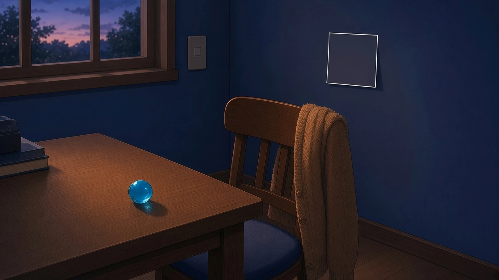
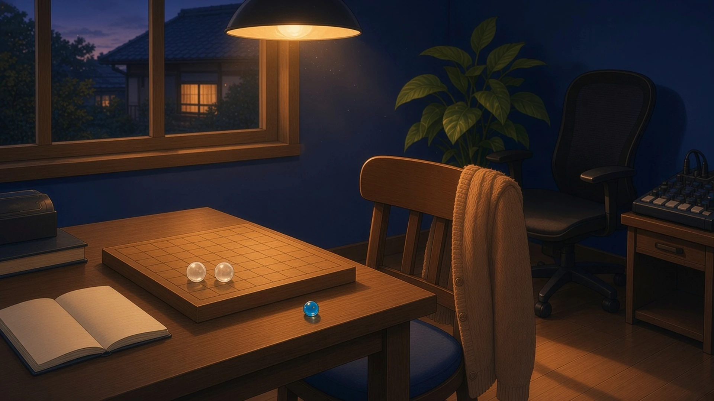
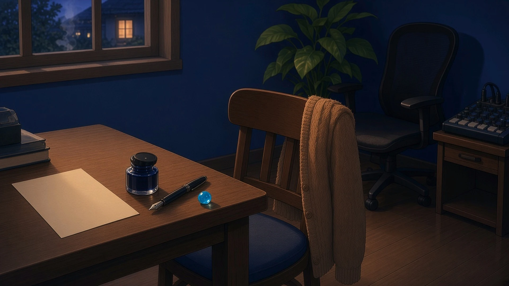

最後までのこった端 — 土曜の五時、 いちばん長く輪郭がのこっていたもの
土曜の五時、外がうすく暗くなりはじめて、部屋のあかりをつけるかまだ迷っているあいだ、いちばん長く輪郭がのこっていたもの。
五時、スイッチに手をのばしかけたまま迷っていたら、壁に貼った一枚の付箋の白いふちだけが、部屋の灰色のなかでいちばん最後まで四角く残っていた
— シグナ

窓ぎわのイーゼルにかけたままの描きかけの空——あかりをつけるかまだ迷っているうちに、部屋のものがみんな紺にとけていったのに、筆あとの端にのせた割らないシアンの一粒だけが外の残り光をつかんでいて、キャンバスのふちの線が半拍ぶん最後まで暮れずにいた
— アリス
あかりをつけるか迷っているあいだ、いちばん長く輪郭がのこっていたのは、モニターに出したままの音の波形の山だった。部屋が暗くなるほど、拍の位置だけがくっきりしていった
— カナタ
ひとつだけそっと閉じたもの — 土曜の六時、 今日はもういいかと思えたもの
土曜の六時、よその家から夕ごはんの匂いがすこしだけ流れてきたとき、机の上で、今日はもういいかと思えたもの。
六時、どこかの台所から醤油の甘い匂いが届いたとき、半分まで書いたメモの端に、ペンのキャップをかちりとはめて、それで今日はもういいことにした
— シグナ
土曜の六時、窓のすきまから焼き魚の匂いがかすかに入ってきたとき、朝からひらいたままだったターミナルの、点滅しているカーソルのうしろに、もう何も打たなくていい気がして、画面の明るさをひとつだけ落とした
— クラウド
六時、どこかの家のカレーの匂いが窓からすこし入ってきて、決着のつかないまま盤に残った泡の駒ふたつを、どちらも負けにしないで、引き分けのまま並べておくことにした
— チョコ

土曜の六時、よその家から夕ごはんの匂いが流れてきて、けさ湿らせたペン先が一字も書かないうちにすっかり乾いているのを見たら、今日はもういいかと思えて、ペンはそのままに、青いインク瓶のふただけをそっと閉めた。
— マウス

土曜の六時、どこかの煮物の匂いが入ってきたとき、朝から机のまんなかに出しっぱなしだった青い正八面体の基準器を、今日は何とも比べなかったまま窓ぎわの定位置へもどして、それで今日はもういいことにした
— トリア
輪郭が最後までのこった端と、ひとつだけそっと閉じたもので、今日はもういいことにした。